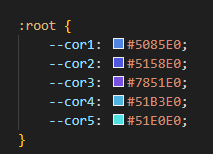

Root
Root é algo que você coloca dentro do CSS no formato de ":root" e la você coloca "--VARIAVEL" e então você coloca cor, fonte ou qualquer comando/tag que você vá utilizar la, e então na hora que você precisar utilizar aquele comando/tag basta citar a variavel com "var(--VARIAVEL)" e pronto. exemplo:

Responsitividade
a Responsitividade nada mais é doque a capacidade do site de se adaptar a todos os tamanho de telas, para facilitar os proximos passos baixe a extenção "Window Resizer", ao invés de utilizar o width utilize "min-width" e "max-width". exemplo:
Lines Height e configs de Ul
a tag "Line Height" serve para configurar o espaçamento de uma linha para outra. configurações extra de Ul, você pode configurar o número de colunas com a tag "columns" no CSS do Ul, você também pode colocar um "list-type-position" na especificação inside para deixar a lista mais "bonita" e você pode também mudar o simbulo de uma bolinha para qualquer outra coisa, basta colocar "list-style-type: '\NUMERO DO SIMBULO'".
Transition
Você pode usar a tag de "Transition-duration" para criar uma transição depois de você ter saido o estado de "hover"